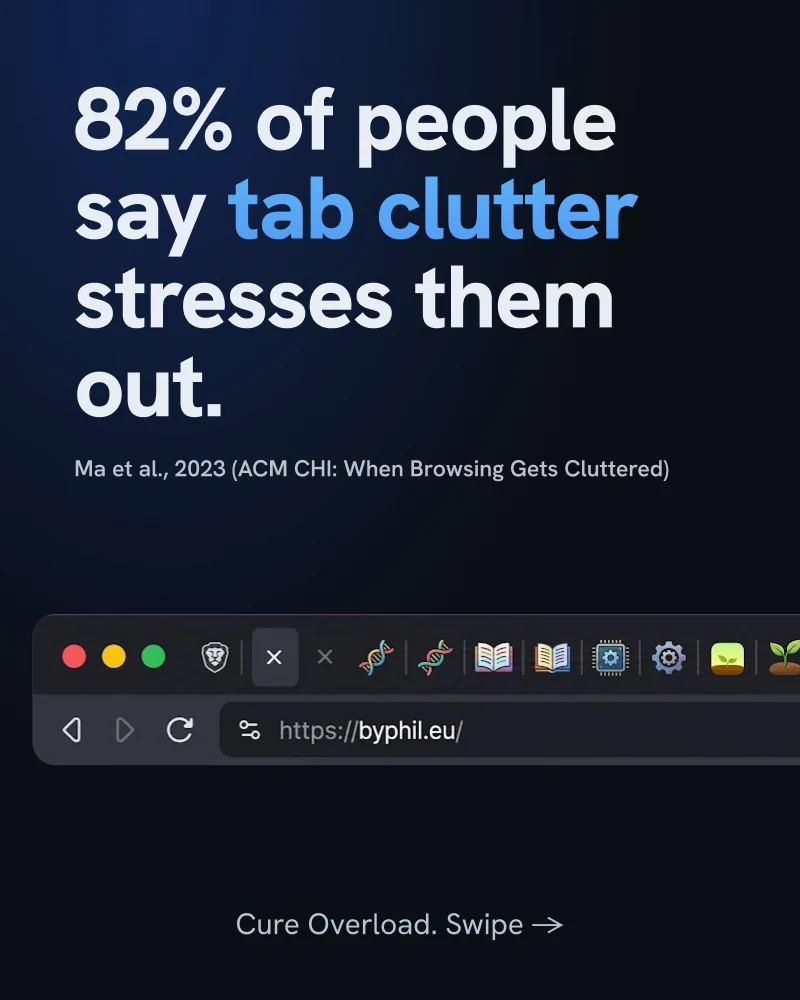

رسم توضيحي، مُولّد بالذكاء الاصطناعي
لن تقرأ معظم ما تحفظه. إليك الحل الحقيقي.
الغالبية العظمى من المقالات المحفوظة لا تُفتح مجدداً أبداً. هذه ليست مشكلة انضباط شخصي — بل هي مشكلة في التصميم.
توضح الأبحاث حول كيفية احتفاظ الأشخاص بأشيائهم الرقمية وإعادة العثور عليها (Bergman and Whittaker، علم إدارة مقتنياتنا الرقمية، MIT Press، 2016) حقيقةً كان معظمنا يشعر بها بالفعل دون أن يرغب في الاعتراف بها: نحن نحفظ أكثر بكثير مما نعود إليه فعلياً، والكثير مما ندّخره للاطلاع عليه لاحقاً نادراً ما نفتحه مجدداً.
Transcript · 0:20
- We save far more than we ever read.
- So turn the pile into one digest: pick a few saves, and they land on your Kindle as one magazine.
إذا كان هذا ينطبق على قائمة القراءة الخاصة بك، فالأمر لا يعود لقلة الانضباط. إنها مشكلة في تصميم الأدوات، وليس فيك أنت.
رد الفعل التلقائي للحفظ ليس هو المشكلة، بل تراكم الكومة هو المشكلة.
يتطلب حفظ عنصر ما نقرة واحدة ونصف ثانية فقط من العزم. أما قراءته لاحقاً بالفعل فتتطلب منك إعادة فتح تطبيق، والتمرير عبر قائمة تضخمت لتصل إلى 60 أو 100 أو 200 عنصر، واتخاذ قرار بشأن أي منها ستقرأ الآن في تلك الدقائق الخمس المتاحة لك. في هذه الخطوة الثانية تحديداً يستسلم الجميع تقريباً — ليس لأن المقالات لم تكن ممتعة، ولكن لأن الاختيار من بين 200 عنصر يُعد عملاً شاقاً بحد ذاته، ومعظم تطبيقات القراءة اللاحقة تضع أمامك الكومة بأكملها وتتركك بمفردك.
بمعنى آخر، الإشارة المرجعية هي وعد تستمر في إخلافه. ليس لكسل منك، بل لأن الأداة طلبت منك القيام بالجزء الأصعب — اتخاذ القرار بما ستقرؤه بالفعل الآن — دون تقديم أي مساعدة.

ما تركز عليه معظم تطبيقات القراءة اللاحقة
تم تصميم كل أداة تقريباً في هذه الفئة لجعل عملية الحفظ سلسة وبلا أي مجهود. وهذا هدف تحسين خاطئ إذا كانت نقطة الفشل الحقيقية هي الاختيار. فالقائمة الأطول ليست أكثر فائدة من القائمة الأقصر إذا كنت لا تفتح التطبيق مطلقاً للاطلاع عليها.
الفكرة وراء Digest
بدلاً من مطالبتك بالتمرير عبر كومة متزايدة واتخاذ قرار، تقوم ميزة Digest في AI Summary Helper بمراجعة أولية نيابةً عنك. بنقرة واحدة، تختار مجموعة صغيرة من محفوظاتك — خمسة عناصر افتراضياً — بالاعتماد على:
- الحداثة، حتى لا تظهر لك عناصر حفظتها قبل ثمانية أشهر وتجاوزت اهتمامك بها بالفعل
- التنوع، حتى لا ينتهي بك الأمر مع خمس مقالات حول نفس الموضوع عندما تكون قد حفظت بالصدفة خمس مواد من نفس النشرة الإخبارية
- المزاج، إذا رغبت في ذلك — اختر "مبهج" أو "محايد" أو "عميق وجاد"، وسيقوم بتوجيه الاختيارات نحو هذا الطابع استناداً إلى أسلوب ما قمت بحفظه
هذا كل شيء. خمسة اختيارات بدلاً من مائتين. قرار يمكنك اتخاذه في عشر ثوانٍ بدلاً من قائمة ستغلق علامة التبويب هرباً منها.
ثم يتيح لك الخروج تماماً من تطبيق القراءة اللاحقة
الجزء الأهم فعلياً: بمجرد أن يختار Digest المقالات، لن تضطر لقراءتها داخل الإضافة. فهو يجمع المختارات — ملخصات وروابط للمصدر الأصلي — في ملف واحد يمكنك إرساله مباشرة إلى جهاز Kindle الخاص بك أو إلى جهاز آخر على شبكتك المحلية. حمله قبل رحلة طيران، أو عطلة نهاية أسبوع، أو تنقل يومي بلا تغطية شبكة. صُممت هذه الحزمة خصيصاً حتى لا تتطلب منك لحظة القراءة الفعلية الجلوس أمام الكمبيوتر المحمول مع فتح إضافة المتصفح.
لماذا يُعد هذا الأمر أكثر أهمية مما يبدو عليه
ستخبرك كل أدوات القراءة اللاحقة بأنها تساعدك على "قراءة المزيد مما تحفظه". ولكن لا أحد منها يغير أي شيء في لحظة الاختيار الفعلية. إنها تكتفي بجعل الحفظ أسهل، وهو ما يؤدي — وفقاً لنفس الدراسة — إلى نمو الكومة بشكل أسرع دون معالجة الخلل الحقيقي.
الحل ليس قائمة أفضل، بل الاستغناء عن النظر إلى القائمة تماماً.
إن AI Summary Helper هو امتداد مجاني لمتصفح Chrome.
أضف إلى Chrome